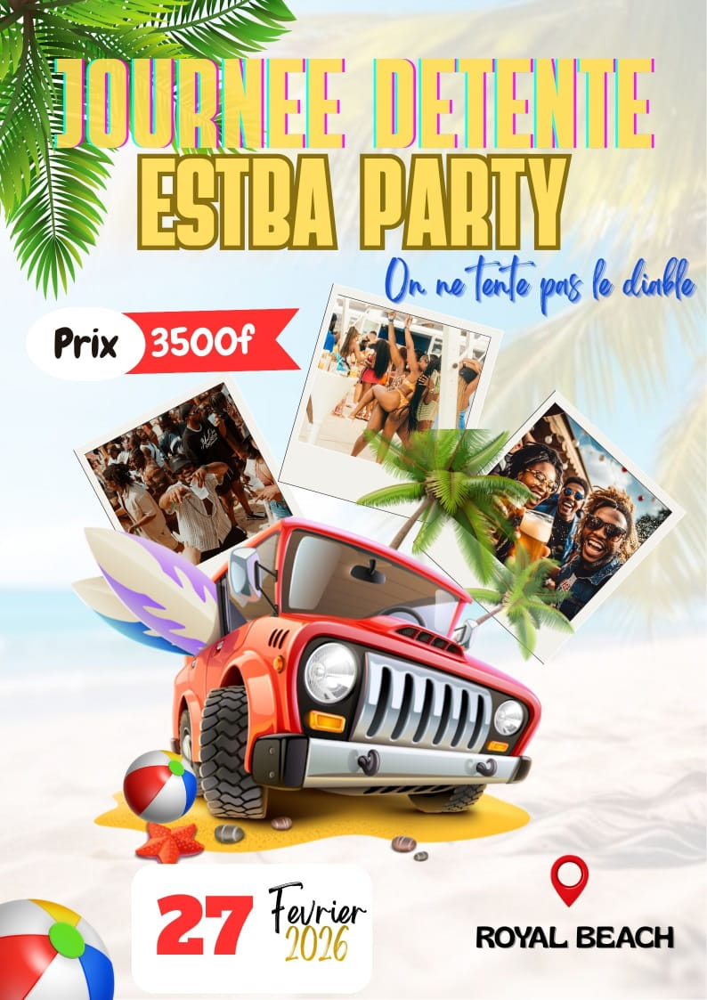

James Party : Une Célébration Mémorable à l'ESTBA
27 Février 2026

⛱️🏖️*Détente ESTBA*🏖️🏖️🏖️ Une sortie avec l'accompagnement du prof KANDONOU. Wow des jeux🎮🎮, baignade🏊👙 et fou rire nous attendent ce 27/02. Une surprise 🎁 attend les 20 première personne qui vont s'inscrire😅😅. Les frais de participation sont seulement à *3500fcfa* 💵💸. *On ne tente pas le diable👿😈* 🔥🔥🔥🔥
Retour a l'accuei